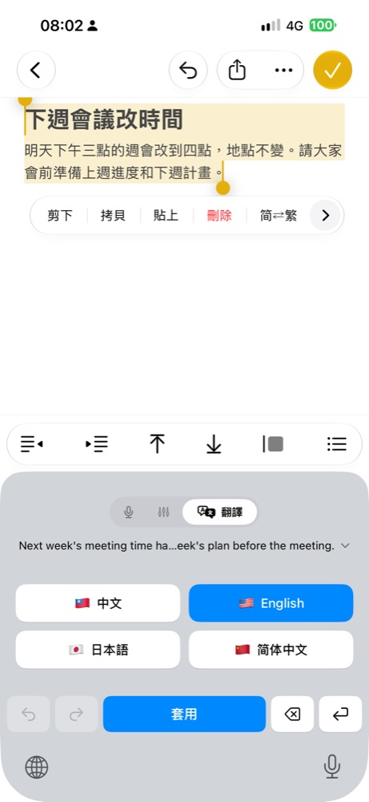
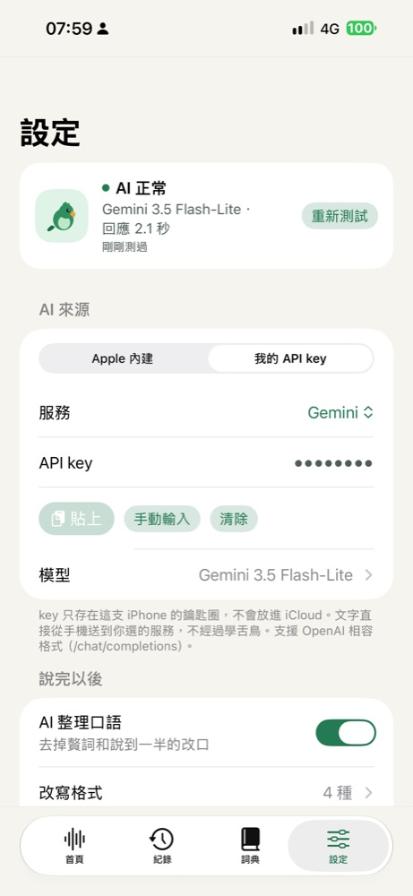
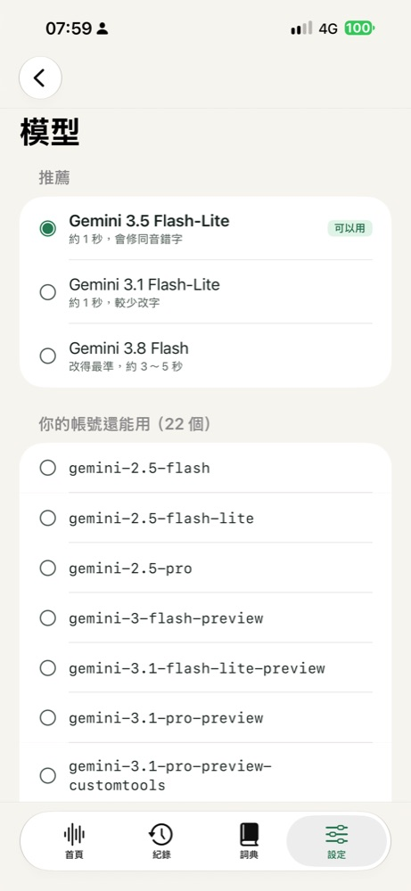
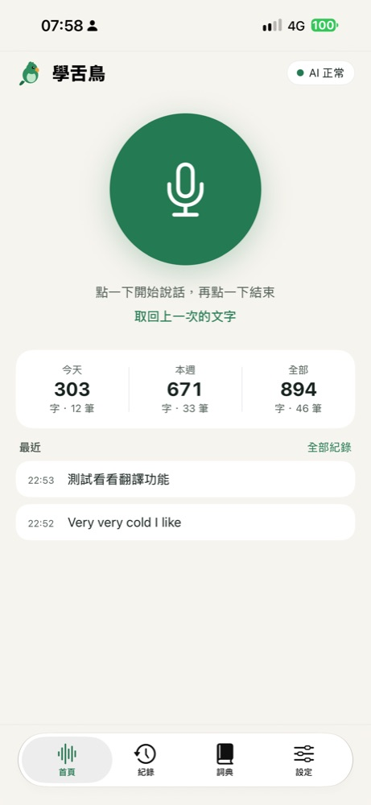
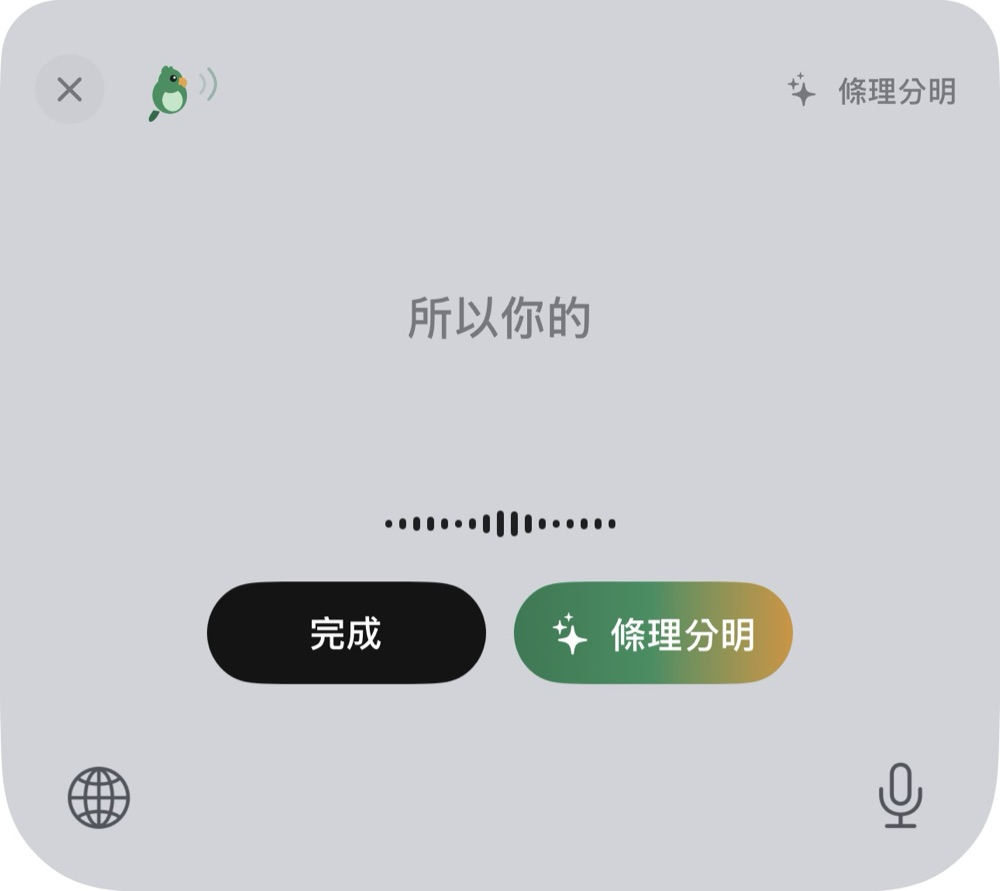
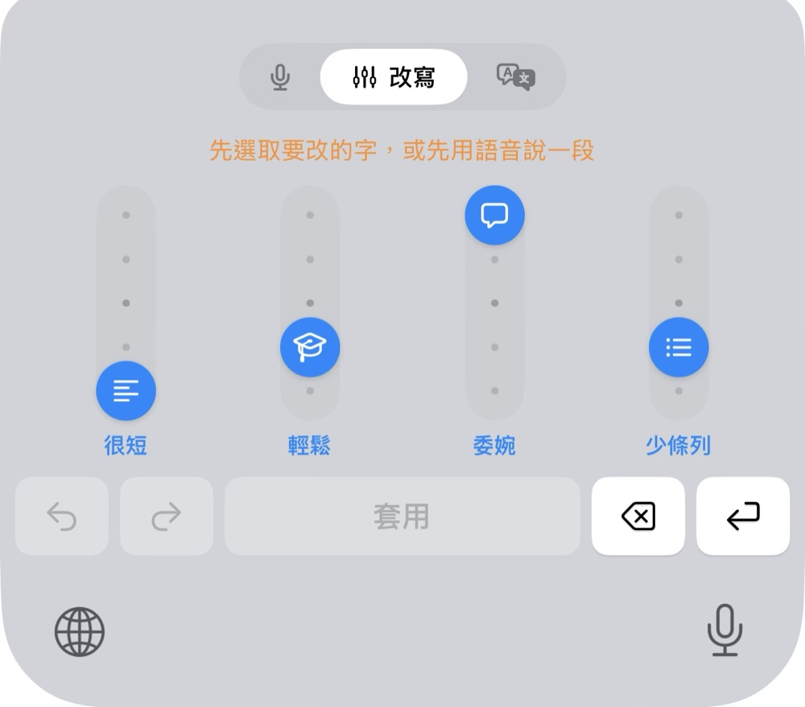

说话就是打字
iPhone 内置语音识别在手机上转文字，录音不保存、不上传。
iPhone 语音键盘 · 已在 App Store 上架
在微信、信息、邮件里点一下麦克风就能说。iPhone 本机识别，选一种 AI 改写格式，每句说完自动整理好再粘贴。





← 左右滑动看更多


iPhone 内置语音识别在手机上转文字，录音不保存、不上传。
语气修正、信件格式、条理分明：选一次，之后每句都先改写再粘贴。
写好的字调长短、正式度，或一键翻成常用的四种语言。
key 错误、额度用完、模型下线都直接告诉你，并附上解决方法。
这是 iOS 给所有需要和主 App 沟通的键盘用的权限名称，开启时系统会提醒「可传送你输入的内容」。学舌鸟没有账号、广告和追踪；声音在手机上识别，不会传给我们。只有你选「我的 API key」时，要改写的文字会直接发到你选的 AI 服务。
不用。一次买断，之后的更新都包含在内。用自己的 API key 时，AI 服务的费用由该服务向你收取（Gemini 有免费额度）。
Mac 版免费。开启 iCloud 云盘后，词典、改写格式和文字记录由 Mac 与 iPhone 共用。
iOS 26 及以上的 iPhone 都能用。要用 Apple 内置 AI，需要支持 Apple Intelligence 的机型（iPhone 15 Pro 及以后）。
¥38 买断 · iOS 26 及以上 · 也有免费的 Mac 版，词典和格式共用